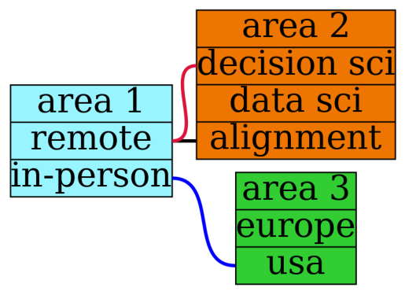

the strategic options approach to decision making
Written on
Let's say that you have a bunch of interrelated decisions to make and that, after consideration, you're able to narrow down the choices you need to make into three areas (these areas are pretty me-centric, but the numbers/interrelationships are going to be mostly made up just as an example): whether to work remotely or in-person, whether to move to Europe or stay in the US, and whether to obtain a position as a decision scientist, a more generic data scientist, or as an AI alignment researcher. We can write some graphviz code to picture the situation as shown below, where a line connecting two choices will mean that those choices are incompatible for whatever reason (for example, suppose you're only willing to work in-person if it's in Europe):
graph G {
rankdir = "LR"
node [ style = filled, fillcolor = coral, shape = record, margin = 0, penwidth = 2, fontsize=50 ]
a [label="area 1 | <a1> remote | <a2> in-person", fillcolor=cadetblue1 ]
b [label="area 2 | <b1> decision sci | <b2> data sci | <b3> alignment", fillcolor=darkorange2 ]
c [label="area 3 | <c1> europe | <c2> usa", fillcolor= limegreen ]
edge [ penwidth = 5, color = black ]
a:<a1> -- b:<b3>
edge [ color = crimson ]
a:<a1> -- b:<b1>
edge [ color = blue ]
a:<a2> -- c:<c2>
}
!dot -Tpng decisionAreas.gv > decisionAreas.png
import matplotlib.pyplot as plt
import matplotlib.image as mpimg
%matplotlib inline
img = mpimg.imread('decisionAreas.png')
plt.axis('off')
plt.imshow(img)
plt.show()

After storing these decision areas and incompatibilities in a few data files, we can use python to construct a table showing all possible decision paths.
import pandas as pd
import numpy as np
from itertools import product
area1 = pd.read_csv('area1.csv')
area2 = pd.read_csv('area2.csv')
area3 = pd.read_csv('area3.csv')
block = pd.read_csv('block.csv')
combos = list(product(area1['area 1'],area2['area 2'], \
area3['area 3']))
combos = pd.DataFrame(combos,columns=['area 1', \
'area 2','area 3'])
for i in range(block.shape[0]):
nogo = combos.isin([block.iloc[i][0]]).any(axis=1) & \
combos.isin([block.iloc[i][1]]).any(axis=1)
combos[i] = nogo
combos['possible'] = ~(combos[0] | combos[1] | combos[2])
combos = combos.drop([0,1,2],axis=1)
options = pd.DataFrame(combos[combos['possible']==True])
options = options.drop(['possible'],axis=1)
print(options)
area 1 area 2 area 3
2 remote data sci europe
3 remote data sci usa
6 in-person decision sci europe
8 in-person data sci europe
10 in-person alignment europe
We would like to evaluate each of these paths so that we can choose the best one, but which path turns out to be best also depends on an uncertain aspect of the future, say, whether you would be able to make any significant difference in the field of AI alignment. Let's say you put that probability at 0.10 or 10%. Then we end up with a table like the one above but where the value of each decision path (say on a scale from 0 to 10) has to be determined for two different futures, f1 (where you do make a big difference in the field) and f2 (where you don't):
import pandas as pd
options = pd.read_csv('options.csv')
# a1: i am able to make a significant difference
# in the field of ai alignment
prob_a1 = 0.10
# a2: am not able to make difference
prob_a2 = 1.0-prob_a1
options['f1'] = [7,5,9,7,10]
options['f2'] = [9,6,9,8,7]
options['score'] = \
prob_a1*options['f1'] + \
prob_a2*options['f2']
print(options)
area 1 area 2 area 3 f1 f2 score
0 remote data sci europe 7 9 8.8
1 remote data sci usa 5 6 5.9
2 in-person decision sci europe 9 9 9.0
3 in-person data sci europe 7 8 7.9
4 in-person alignment europe 10 7 7.3
The above table encapsulates a decision tree where, because of the values entered for f1 and f2 (which you get by going through the possibilities, having a conversation with your gut, and rating them), the top choice ends up being an in-person decision science position in Europe (value 9.0), but only by a small margin over a remote data science position in Europe (value 8.8).
As usual, if the model gives numbers that don't seem quite right, that's an opportunity to better understand why as well as to more fully reveal your preferences. Also as usual, it's a good idea to explore more than just one model!